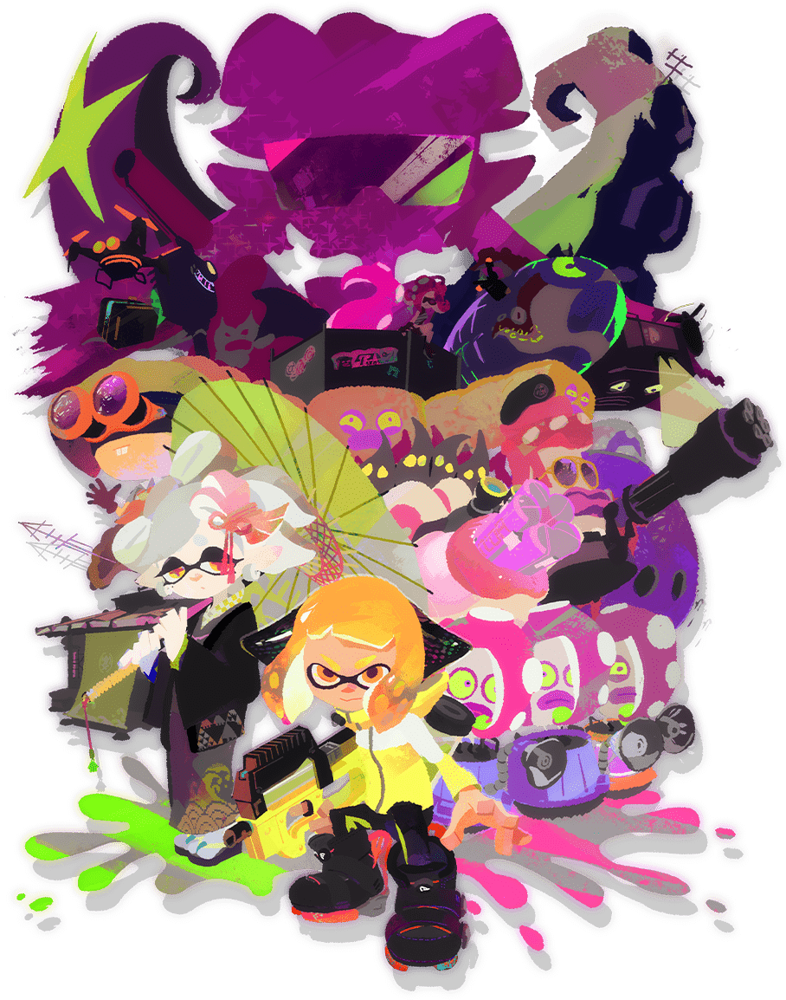

¡Ahora se suman los Octolings!
Fue lanzado a nivel mundial el 21 de julio de 2017.
Hasta finales de 2021, se situó como el noveno título más vendido en la historia de su
consola.
En diciembre del mismo año, había superado las 13.13 millones de copias en formato físico y
digital.
Según Famitsū, es el quinto juego de Nintendo Switch más exitoso en el mercado japones, con
más
de 4
millones de unidades distribuidas.
Acerca de
Respecto a la primera entrega incluye novedades como un
remozado modo en solitario, cambios en el
sistema de juego, un mayor arsenal y nuevos estilos de combate.
El 13 de junio de 2018 se publicó una expansión de contenido descargable, Splatoon 2:
Octo
Expansion, que amplía el modo individual con una nueva historia desde el punto de
vista
de
otra
especie cefalópoda, los Octolings.
La prensa especializada emitió críticas favorables. Entre los
aspectos positivos se mencionan las
novedades, el apartado gráfico y el mayor desarrollo de la modalidad para un jugador, además
del
sistema de juego y la estabilidad de la conexión en los combates en línea.
Como puntos negativos los críticos señalaron la ausencia de multijugador con pantalla
dividida,
el
sistema de emparejamiento aleatorio o la falta de chat de voz.
Que Splatoon tuviera una secuela fue objeto de burlas y de
diversos memes durante el mes de octubre
de 2016.
Splatoon 2 está basado 2 años en el futuro y es el tiempo transcurrido desde el primer juego
y
el
número de la entrega.
Jugabilidad
La mecánica del juego sigue siendo la misma: un juego de disparos en tercera persona enfocado en el multijugador online, donde ocho jugadores se dividen en dos equipos de cuatro. Su tarea consiste en cubrir el escenario con tanta tinta del color de su equipo como sea posible dentro de un límite de tiempo.
El juego añade nuevos tipos de armas y las armas del primer juego han sido alteradas con nuevas mecánicas, como las pistolas duales. Se han añadido nuevas armas especiales como el atormentador, también se han añadido nueva indumentaria como los pantalones y los cortes de pelo. El juego admite multijugador local con varias consolas de Nintendo Switch. Se implementaron nuevas tintas, nuevas marcas, nuevos peinados, un nuevo modo multijugador llamado Salmon Run y nuevos amiibo.

En esta edición se incluye un modo cooperativo llamado Salmon Run, donde los jugadores deben colaborar para derrotar a enemigos que aparecen en hordas en la pantalla, utilizando armas específicas. Al derrotar a estos enemigos, los jugadores pueden recolectar alevines dorados que dejan atrás, los cuales pueden ser intercambiados por dinero y accesorios especiales. Es importante destacar que, a diferencia de los demás modos de juego, Salmon Run es temporal y solo aparece en franjas horarias específicas que son anunciadas con antelación.
Lore
La acción de Splatoon 2 transcurre dos años después del
último festival, donde Tina derrotó a su
prima Mar en la encuesta de popularidad del dúo que ambas forman, las Squid Sisters.
En la primera parte, se revela que las ellas no son solo un grupo pop, sino que también
tienen una
identidad secreta como agentes 1 y 2 del Comando Branquias. Junto con el agente 3 (encarnado
por el
jugador), habían logrado detener al líder de los octarianos, DJ Octovius.
La relación entre las primas se ve afectada por el resultado de la encuesta, lo que las
lleva a
distanciarse.
Posteriormente, Tina regresa a Inkpolis Square y descubre que tanto Mar como el Gran Siluro
que
proporciona electricidad a la ciudad han desaparecido.
Temiendo que los octarianos estén
detrás del
caso, retoma su identidad secreta como "agente 2" del Comando Branquias y recluta en la
plaza a un
Inkling, el personaje del usuario, que se convierte en el "agente 4" e investiga lo
sucedido.
Con la ayuda de Tina y el experto en armas Jairo, el agente 4 debe recorrer los cinco mundos
que
componen el Valle Pulpo y recuperar todos los siluros o volbagres robados, incluyendo
aquellos que dan
energía a las máquinas de los jefes de nivel.
A lo largo de la historia, se descubre que Mar ha sido secuestrada y manipulada mentalmente
por DJ
Octovius, quien ha logrado fugarse de prisión y utiliza el Gran Siluro para poner en marcha
su nuevo
escenario, el Octotrón.

En el último nivel, el agente 4 debe destruir el Octotrón para que Tina y Jairo liberen a Mar del control mental al que está sometida. Una vez esto sucede, las Squid Sisters actúan juntas de nuevo para ayudar al protagonista en su último enfrentamiento con DJ Octovius, valiéndose del Pez Dorado para derrotarle. En el final del juego, el antagonista es encarcelado en una bola de nieve, el Gran Siluro regresa a Cromópolis, y las cantantes resuelven sus diferencias para volver a los escenarios.
¡Splafest!
Los Splatfests regresaron en Splatoon 2, ahora presentado por los miembros de Off the Hook, Pearl y Marina. La estructura era en gran parte la misma que en el juego anterior. Aunque Miiverse no es compatible con Nintendo Switch, la función de dibujo exclusiva de Splatoon 2 permite a los jugadores enviar garabatos que aparecen en el juego como letreros de neón, pancartas, fuegos artificiales o graffiti, así como cargar garabatos en cuentas de redes sociales.
Inkopolis Square está decorada de manera similar a Crómopolis en el primer juego, y todas las áreas quedan bloqueadas en la noche mientras Pearl y Marina realizan su evento allí.

Chaos vs. Order (también conocido como Final Fest: Splatocalypse) fue muy promocionado como el Splatfest final de Splatoon 2, presentando muchas características especiales y únicas que influirían en los eventos de la secuela. Sin embargo, en 2020, cuatro Splatfests adicionales fueron organizados después de un año de inactividad, durante la pandemia de COVID-19, brindando a los jugadores más entretenimiento durante el encierro.
Octo Expansion
Splatoon 2: Octo Expansion añade un completo modo para un jugador que permite a los jugadores tomar el control del nuevo personaje Agente 8, un octoling que ha perdido sus recuerdos. La nueva campaña para un jugador incluye 80 misiones, así como nuevas historias que revelan datos desconocidos sobre personajes queridos de la saga. Los jugadores que completen la campaña Octo Expansion desbloquearán la habilidad de jugar como octolings en los combates multijugador.
Utilizando puntos como moneda, el jugador debe navegar por varias estaciones de metro y gastar puntos para completar estos desafíos. El número de puntos ganados o perdidos está determinado por el desempeño del jugador en cada desafío. Estos desafíos incluyen derrotar enemigos dentro de un límite de tiempo, guiar una bola 8 gigante, luchar contra jefes y más. Cada nivel se puede acceder a través del mapa del metro en el mundo central.
Salmon Run
En Salmon Run, cada partida consta de tres oleadas. Para completar cada oleada, los jugadores deben recolectar huevos de poder y huevos dorados derrotando a los salmónidos y depositándolos en la canasta de huevos. Cada Boss Salmonid derrotado deja caer tres huevos dorados, los cuales deben ser recogidos antes de que un Snatcher los tome de vuelta.
Cada jugador solo puede llevar un huevo dorado a la vez. Cada oleada tiene una cuota específica que varía según el número y los rangos de los jugadores. Si la cuota no se alcanza antes de que termine el temporizador de la oleada o si todos los jugadores son derrotados, la partida falla. Completar una partida aumenta la calificación salarial del jugador y aumenta la dificultad de las siguientes partidas. Si fallan, a los jugadores se les paga por los huevos dorados recolectados, pero su nivel de pago puede reducirse.
En Salmon Run, el nivel de tinta y los usos de las armas especiales de los jugadores se muestran visualmente. El salvavidas en su espalda representa su tanque de tinta, que se agota desde la parte superior en sentido de las agujas del reloj. El stock de armas especiales se muestra como dos paquetes plateados atados a su sombrero, que desaparecen a medida que se usan las armas especiales.